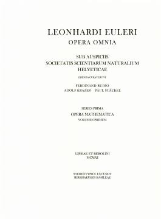
I 1
Vollständige Anleitung zur Algebra, J.L. Lagrange: Additions à l’analyse indéterminée
H. Weber
PDF herunterladenDownload
83 Bände in vier Reihen, je Band ein PDF (3,7 GB zusammen). Die Bände sind frei zugänglich, mit Freigabe der Bernoulli-Euler-Gesellschaft, Basel, bei der die Rechte liegen.
Kapitel 1
30 Bände: Algebra, Zahlentheorie, Analysis, Variationsrechnung und Geometrie. Ein Klick auf das Titelblatt oder auf „PDF herunterladen“ lädt den ganzen Band.

I 1
H. Weber
PDF herunterladen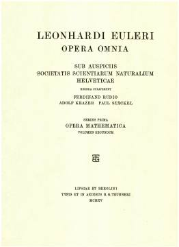
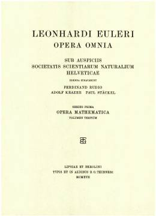
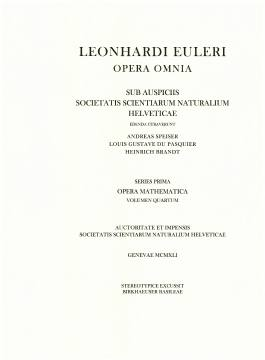
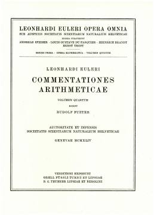
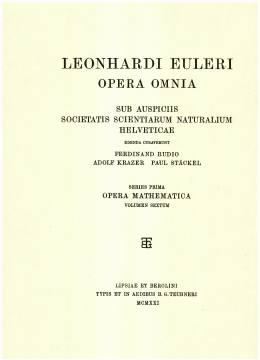
I 6
F. Rudio, A. Krazer, P. Stäckel
PDF herunterladen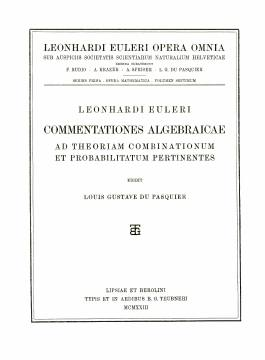
I 7
L.G. du Pasquier
PDF herunterladen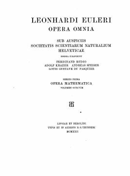
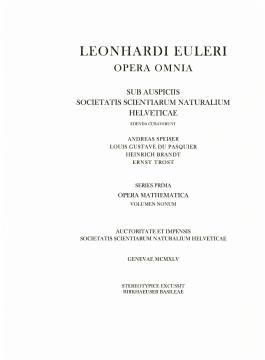
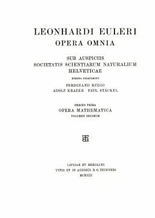
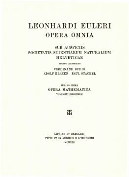
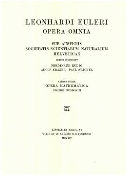
I 12
F. Engel, L. Schlesinger
PDF herunterladen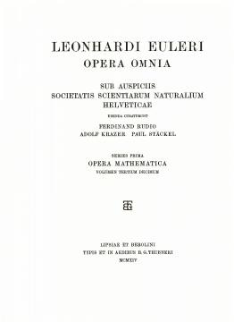
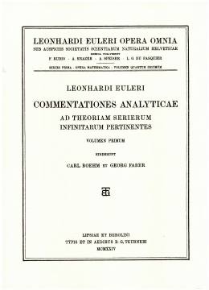
I 14
C. Boehm, G. Faber
PDF herunterladen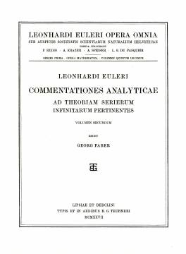
I 15
G. Faber
PDF herunterladen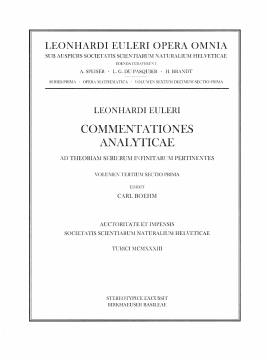
I 16.1
C. Boehm
PDF herunterladen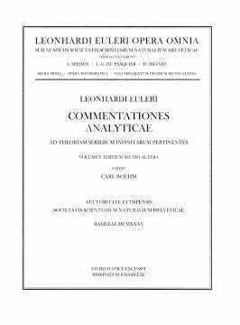
I 16.2
C. Boehm
PDF herunterladen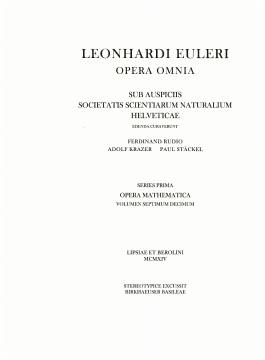
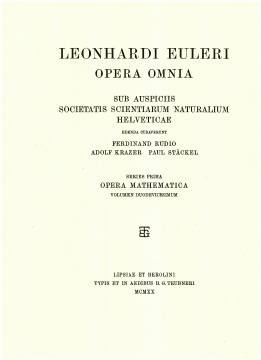
I 18
A. Gutzmer, A. Liapounoff
PDF herunterladen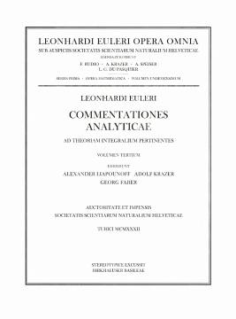
I 19
A. Liapounoff, A. Krazer, G. Faber
PDF herunterladen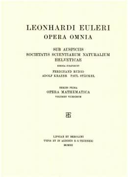
I 20
A. Krazer
PDF herunterladen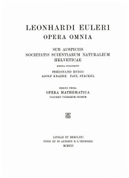
I 21
A. Krazer
PDF herunterladen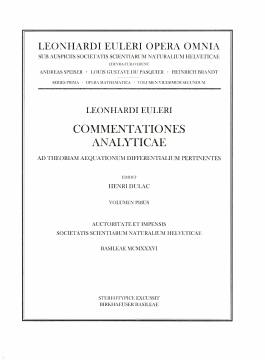
I 22
H. Dulac
PDF herunterladen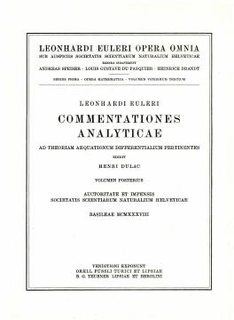
I 23
H. Dulac
PDF herunterladen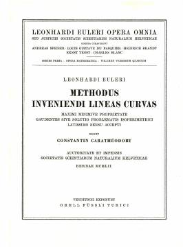
I 24
C. Carathéodory
PDF herunterladen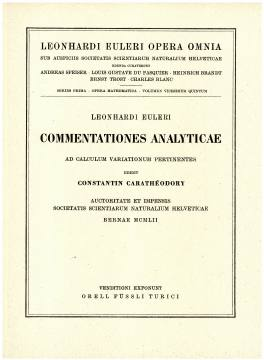
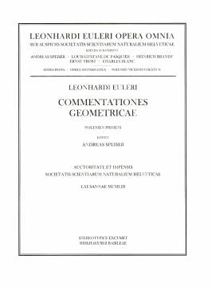
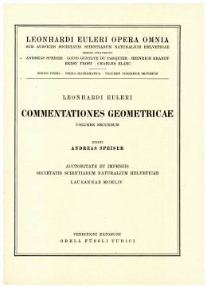
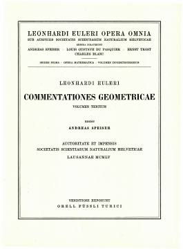
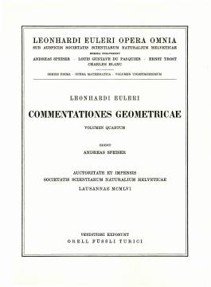
Kapitel 2
32 Bände: Mechanik, Hydrodynamik, Ballistik, Schiffbau und Himmelsmechanik.
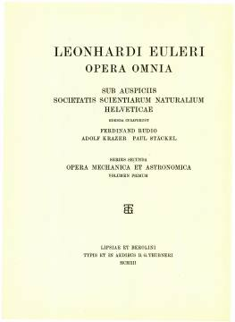
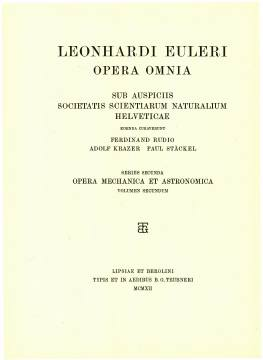
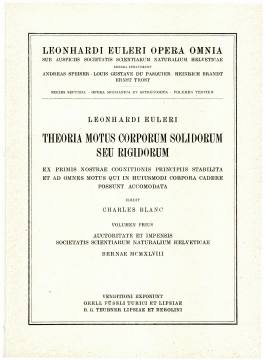
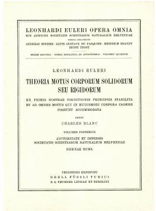
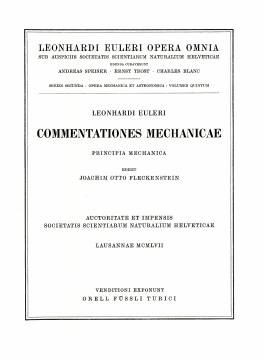
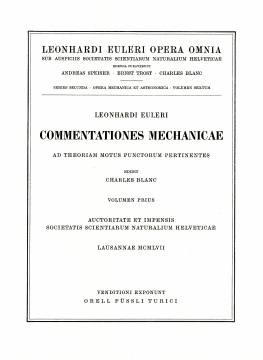
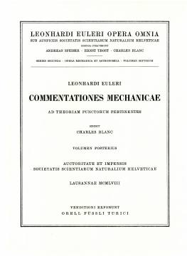
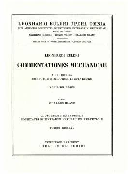
II 8
Ch. Blanc
PDF herunterladen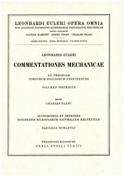
II 9
Ch. Blanc
PDF herunterladen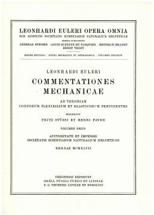
II 10
F. Stüssi, H. Favre
PDF herunterladen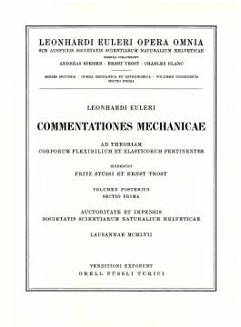
II 11.1
F. Stüssi, E. Trost
PDF herunterladen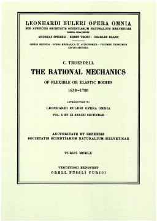
II 11.2
C.A. Truesdell
PDF herunterladen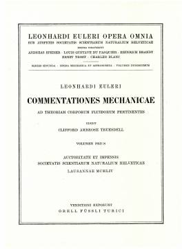
II 12
C.A. Truesdell
PDF herunterladen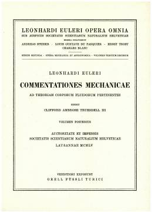
II 13
C.A. Truesdell
PDF herunterladen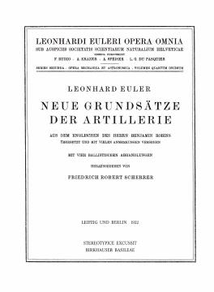
II 14
F.R. Scherrer
PDF herunterladen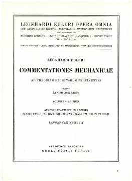
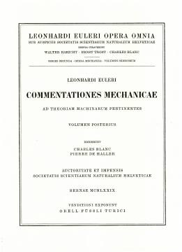
II 16
Ch. Blanc, P. De Haller
PDF herunterladen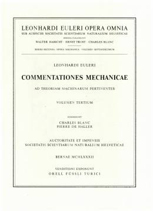
II 17
Ch. Blanc, P. De Haller
PDF herunterladen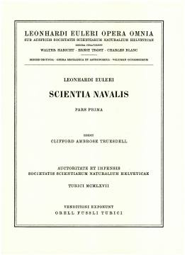
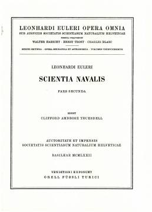
II 20
W. Habicht
PDF herunterladenII 21
W. Habicht
PDF herunterladenII 25
M. Schürer
PDF herunterladenII 26
A. Verdun
Online-Edition, Vorabfassung (Bernoulli-Euler-Gesellschaft) · doi 10.12685/publbez.6.2021
PDF herunterladenII 27
A. Verdun
Online-Edition, Vorabfassung (Bernoulli-Euler-Gesellschaft) · doi 10.12685/publbez.7.2022
PDF herunterladenII 28
L. Courvoisier
PDF herunterladenII 29
L. Courvoisier
PDF herunterladenII 30
L. Courvoisier
PDF herunterladenII 31
E.J. Aiton, A. Kleinert
PDF herunterladenKapitel 3
12 Bände: Physik, Optik und die Briefe an eine deutsche Prinzessin.
III 1
E. Bernoulli, R. Bernoulli, F. Rudio, A. Speiser
PDF herunterladenIII 2
E. Hoppe, K. Matter, J.J. Burckhardt
PDF herunterladenIII 10
P. Radelet-de Grave, D. Speiser, K. Chemla
PDF herunterladenIII 12
A. Speiser
PDF herunterladenKapitel 4
9 Bände des Briefwechsels. Die Online-Editionen der Bernoulli-Euler-Gesellschaft erscheinen in den „Publikationen des Bernoulli-Euler-Zentrums“ auf eterna, dem Publikationsserver der Universitätsbibliothek Basel; dort stehen sie bisher als Vorabfassung („Preliminary Version“). Die Dateien hier sind mit den dort angebotenen identisch oder, wo es sie gibt, die gedruckten Bände.
IVA 2
Emil A. Fellmann, Gleb K. Mikhajlov
PDF herunterladenIVA 3
E.A. Fellmann, G.K. Mikhajlov
Druckfassung · Online-Edition: doi 10.12685/publbez.2.2017
PDF herunterladenIVA 4
F. Lemmermeyer, M. Mattmüller
Online-Edition, Vorabfassung (Bernoulli-Euler-Gesellschaft) · doi 10.12685/publbez.1.2016
PDF herunterladenIVA 5
A.P. Juškevič, R. Taton
PDF herunterladenIVA 6
P. Costabel, E. Winter, A.T. Grigorijan, A.P. Juškevič
PDF herunterladenIVA 7
S. Bodenmann, V. Hug, M. Ilić, A. Kleinert
Online-Edition, Vorabfassung (Bernoulli-Euler-Gesellschaft) · doi 10.12685/publbez.3.2018
PDF herunterladenIVA 8
A. Kleinert, Th. Steiner
Druckfassung · Online-Edition: doi 10.12685/publbez.4.2019
PDF herunterladenIVA 9
Christian Gilain, Vanja Hug, René Taton
Online-Edition, Vorabfassung (Bernoulli-Euler-Gesellschaft) · doi 10.12685/publbez.5.2019
PDF herunterladenKapitel 5
Jeder Band ist vor der Freigabe einzeln geprüft worden: Titelblatt gegen Katalogangabe (Reihe und Band), Seitenzahl der PDF gegen die Seitenbilder, Seitenbild gegen PDF, und doppelte Dateien. Die Bände der Reihe IV A und II 26/27 sind zudem mit den Dateien abgeglichen, die die Bernoulli-Euler-Gesellschaft auf eterna anbietet.
sha256sum, mit dem Dateinamen des Downloads; shasum -a 256 -c opera-omnia.sha256 prüft eine heruntergeladene Sammlung.@book je Band, mit Herausgebern, Reihe, Band, Jahr, Verlag, ISBN oder DOI und Link zum PDF.Herausgegeben von der OpenScienceTechnology GmbH · Impressum · Datenschutz